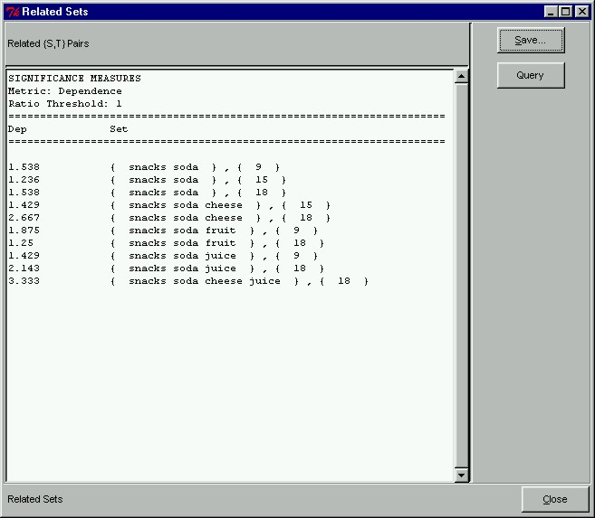

 |
Dependent SetsAfter executing the algorithm in Phase II, we will get the related sets shown here. As we can see, pairs which were found significant with correlation are different from the pairs found to be significant using the dependence ratio. One of the key advantages of our exploratory model is that users have more control of the mining process and can explore freely with different types of constraints, relationship metrics and thresholds.
|